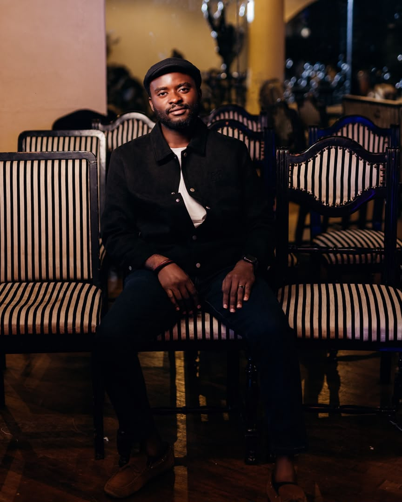

2+
Projects built
Welcome to my portfolio
Data Enthusiast
My name is Pamilerin Oladosu. I am a student of Data Science with a background in Music . I am passionate about learning new things, solving problems, and using technology to make life easier. I enjoy exploring how data can be used to understand information, make better decisions, and solve real-world challenges.

Projects built
Miva Open University